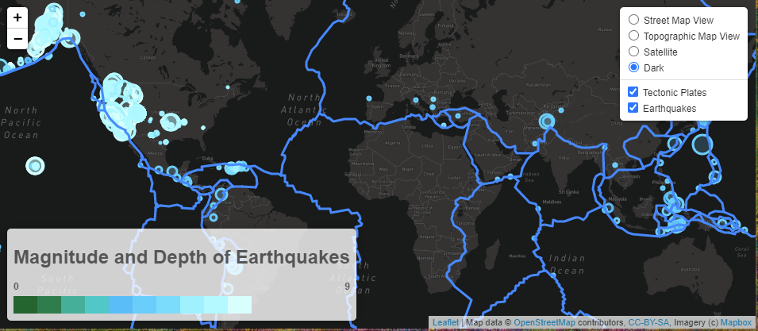
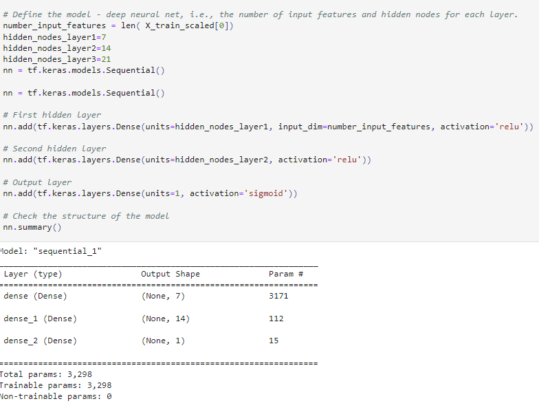
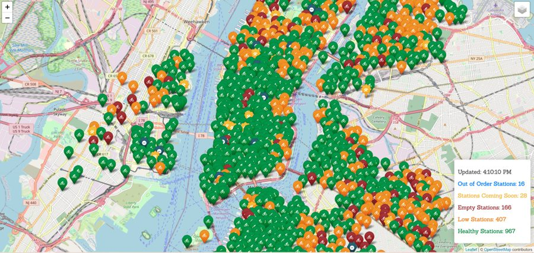
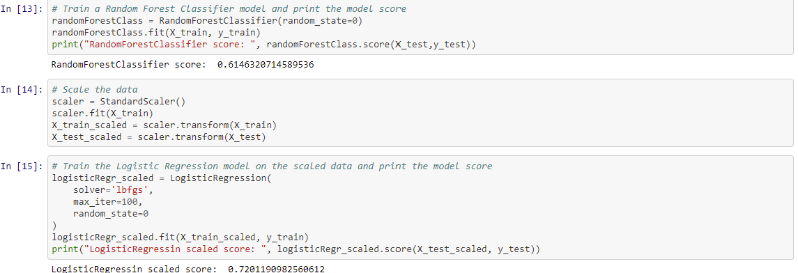
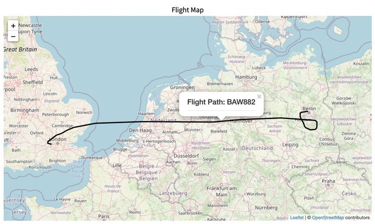
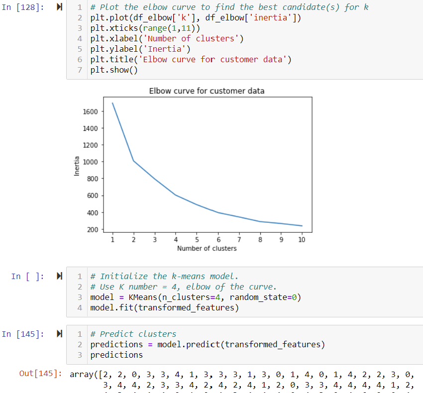
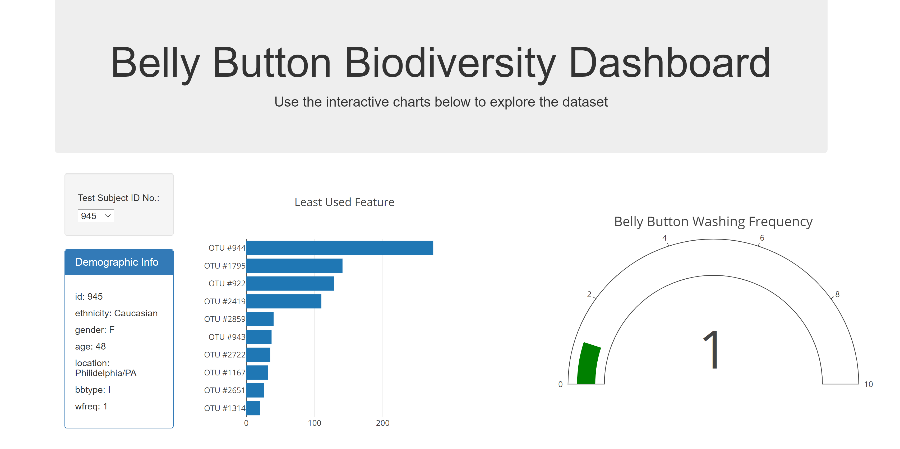

Metro-Atlanta area
IT people leader with a passion for data — currently growing my skills as a data analyst and data scientist.
Quick stats
About
I lead IT teams day to day, and outside of that I've been building a second set of skills in data analysis and data science — from statistical modeling and forecasting to machine learning and geospatial visualization. I like the combination: people leadership grounded in the ability to actually dig into the data myself.
Skills
Experience
Senior Manager
Lead a global 24/7 team managing enterprise applications and SQL databases, vendor contracts, and warranty escalations. Drive high‑availability systems and strategic alignment across Cox while spearheading AI initiatives within the Infrastructure organization to enhance automation and operational intelligence.
Previous role
Revitalized an underperforming department, introduced workload automation (Control‑M), and fostered cross‑divisional collaboration and business continuity planning.
This section is a placeholder — swap in your actual roles, companies, and dates.
Projects

GeospatialAn interactive map plotting historic earthquakes by location, magnitude, and depth, with tectonic plate overlays pulled from the USGS API.
Leaflet.js · JavaScript · HTML/CSS
Combined U.S. Census, Google Maps, and Google Places data to visualize how banking access correlates with socioeconomic factors by zip code.
Python · Pandas · Google APIs · Matplotlib

Machine learningA binary classifier neural network trained on 34,000+ funding applications to predict which nonprofits are likely to succeed if funded.
TensorFlow · Keras · Python

GeospatialLive map of every Citi Bike station in New York City, color-coded by status, plus a companion Tableau dashboard for exploring ride distance by rider type.
Leaflet.js · Tableau · REST API
A multi-page dashboard with individual charts for weather data, a comparison view across all plots, and a raw-data view — all cross-navigable.
HTML · CSS · JavaScript charting

Machine learningTrained and compared supervised models — including Random Forest and scaled Logistic Regression — to classify loan applications as high or low risk.
Python · Scikit-learn

Full-stackA team-built visualization backed by a Flask-powered API and database, mapping flight paths tied to reported in-flight emergencies.
Python Flask · HTML/CSS/JS · Database
A data visualization exploring adoptable-dog listings across the country to surface regional adoption trends.
Python · Data visualization

Machine learningUsed an elbow curve to choose an optimal k, then applied K-means clustering to group customers by behavior for targeted analysis.
Python · Scikit-learn · K-means

DashboardAn interactive dashboard exploring microbial biodiversity data by test subject, combining bar charts, a gauge chart, and demographic detail.
Plotly · JavaScript · HTML/CSS